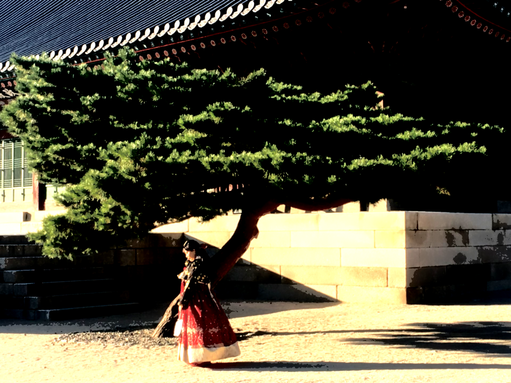
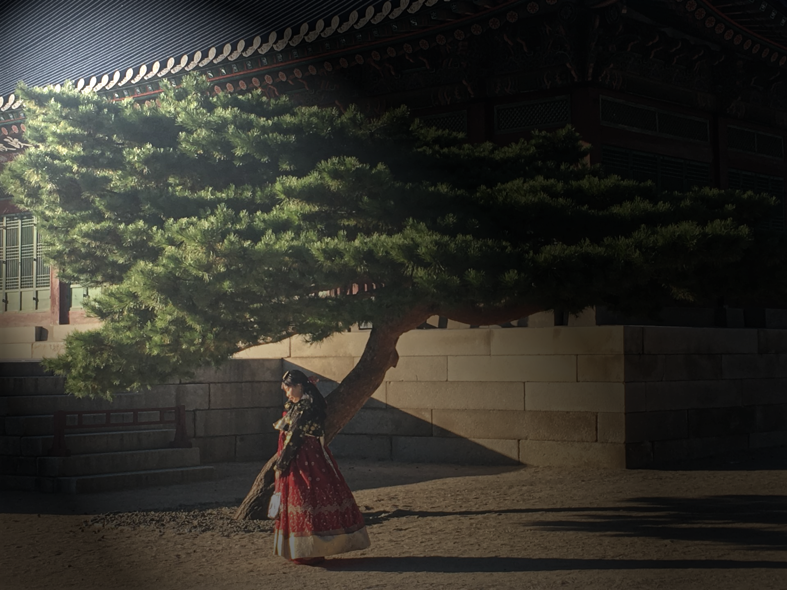
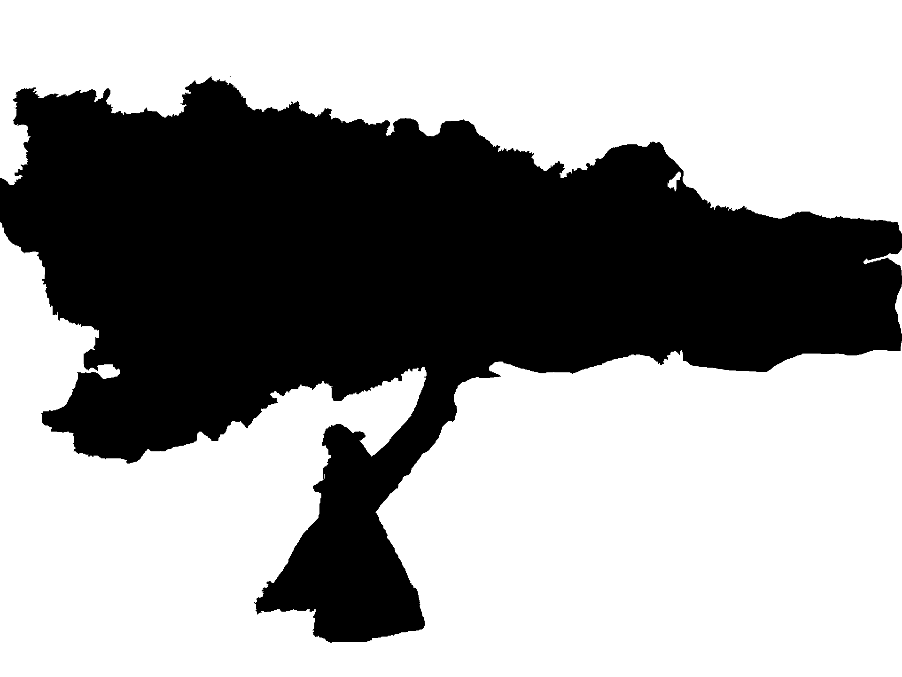

Introduction
The aim of this assignment is to evaluate how each image that has been digitally manipulated, changes how it is perceived by an audience. In Affinity Photo, a single original photograph of a Korean Woman in Traditional Hanbok Attire standing underneath a tree at Gyeongbokgung palace was manipulated in six unique ways. Each photo has its own story that can be used to examine different design principles.
First Image

First image - coex mall. In Affinity photo I used the Selection Brush Tool to detach the woman and the tree from the photo. I imposed it to a picture containing the Coex Mall Library that has been given an average blur. I changed the background to a soft light, added a curve adjustment of x: 0.02 and changed the colour balance to 3% red. A gaussian blur at 100% from the lefthand window draws attention to the subtle visual hierarchy between her posture in the traditional dress against the modern environment (Lidwell, 2010).
Second Image

Second Image - watercolour. A gaussian blur at 0.4px, a threshold adjustment at 15% and a white level adjustment at 10% were added to achieve a watercolour effect. This creates a mystical aesthetic for the viewer that has a higher probability of being accepted, used and influencing positive attitudes regarding its quality. In contrast, images with less-aesthetic designs are not as user-friendly (Lidwell, 2010).
Third Image

Third Image - lighting. Lighting is added to the top left hand of the page directed at the lady, at a shininess of 90% and an ambience of 20%. The alignment of the shadow makes her the centre piece of the image and the light guides the user’s attention to her (Lidwell, 2010).
The photo is split into two groups by the gentle light, with the linear lines providing good continuation as the viewer considers the left-hand side of the tree more related to her than other elements within the image (Lidwell, 2010).
Fourth Image

Fourth Image - mosaic. A Voronoi live filter was used at a cell size of 4 and a line width of 1, to create a mosaic texture to the image. The spaces between each tile challenges the user’s awareness of proximity. Adjusting the vibrance, shadows and highlights results in a harmonious visual effect (Lidwell, 2010).
Fifth Image

Fifth Image - colour contrast. The background has a vivid light opacity of 63% and a black and white adjustment with the colour red at -12%. Separating the lady in red against a black and white background, uses the Gestalt principle of similarity. This provides the viewer with a common focus, resulting in a better aesthetic experience (Chuang and Tang 2020).
Sixth Image

Sixth Image - silhouette logo. I selected the lady and tree, then used the flood fill icon to make the area black and the background white. This silhouette can be used as a logo, and although a simple design, these have been proven to be commercially viable as seen by the iPod advertising art, which became iconic (Caplin, 2012).
Conclusion
Using affinity photo to transform the original image alongside visual design principles can change the aesthetic appeal to the user.
The final project will centre around using images for a comic book website. The techniques above will be used to visually convey the website journey, starting with the silhouette, of which will be the logo.
Other manipulation techniques will be used for displaying images within each other for a banner and changing the website layout based on Gestalt principles.
References
Caplin, S. (2012) Art and design in photoshop, O’Reilly Online Learning. Available at: https://learning.oreilly.com/library/view/art-and-design/9780240811093/009_9780080928289_chapter3.html#p56 (Accessed: 20 February 2024).
Chuang, H.C. and Tang, D.L. (2020) Reconfirm gestalt principles from scan-path analysis on viewing photos, IEEE. Available at: https://ieeexplore-ieee-org.ezproxy.lib.bbk.ac.uk/document/8986232 (Accessed: 20 February 2024).
Lidwell, W., Butler, J. and Holden, K. (2010) Universal principles of design, revised and updated, Universal Principles of Design, Revised and Updated. Available at: https://learning.oreilly.com/library/view/universal-principles-of/9781592535873/xhtml/ch55.html#ch55 (Accessed: 19 February 2024).